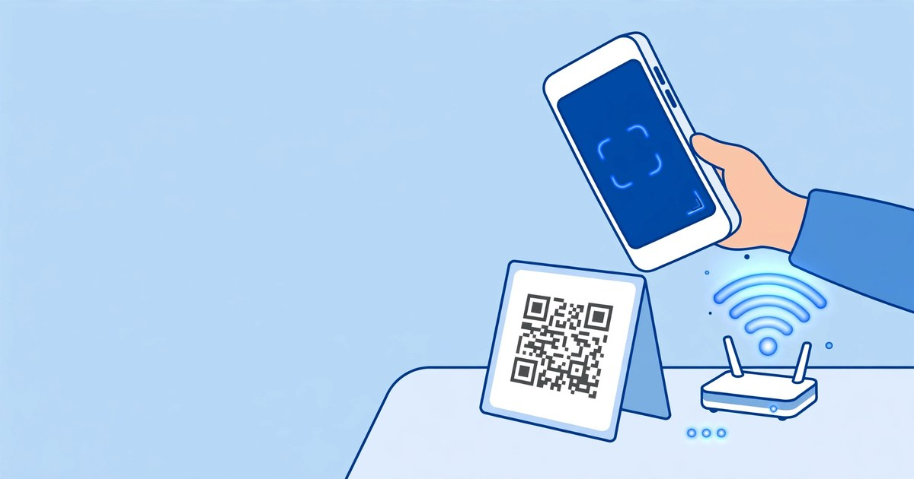

How to Create a Wi-Fi QR Code Online
One scan joins the network — no password to spell out, no app to install.
November 24, 2026 · 6 min read

To create a Wi-Fi QR code, open the free QR Code Generator, pick WiFi as the code type, type your network name and password, and download the PNG. Anyone who scans it with a phone camera joins your network straight away — no password to read out or type. It takes under a minute, needs no sign-up, and your password never leaves your browser.
What the QR Code Generator does
The QR Code Generator makes QR codes for four things: a website link, plain text, a Wi-Fi network, or a vCard contact. Pick the WiFi type and it shows three fields: Network name (SSID), Password, and Security type. The security choices are WPA / WPA2, WEP, and None (open) — WPA / WPA2 is the default, and the right choice for almost every home router made in the last fifteen years.
The tool turns those three fields into a short text string in the standard Wi-Fi QR format, then draws it as a QR code. Choose the size — 256 × 256, 512 × 512 (the default), or 1024 × 1024 pixels — and the colours, black on white by default. Click Generate QR code, check the preview, and Download PNG saves it as qr-code.png. Everything runs in your browser; the QR content is never sent anywhere.
What is actually inside a Wi-Fi QR code?
A Wi-Fi QR code is your network name and password written in a format phones understand. For a home network called MyWiFi with the password BlueDoor-2026! on WPA, the code stores this 38-character string:
WIFI:T:WPA;S:MyWiFi;P:BlueDoor-2026!;;
Read it left to right: T:WPA is the security type, S:MyWiFi is the network name, P:BlueDoor-2026! is the password, and the double semicolon closes the code — 38 characters in all. The phone reads the string and joins the network named in it, using the password in it.
Create a Wi-Fi QR code in 5 steps
- Open the QR Code Generator and pick WiFi as the code type. The form switches to the three Wi-Fi fields.
- Type the network name (SSID) exactly as it appears — capitals, spaces and all. Wi-Fi names are case-sensitive: MyWiFi and mywifi are two different networks.
- Type the password and check the security type. Leave WPA / WPA2 selected unless your router only speaks WEP. For a network with no password, pick None (open) and leave the password blank.
- Pick a size and colours, then click Generate QR code. The 512 default suits a phone screen or a small card; choose 1024 for a sign people scan from further away. Keep the contrast strong — dark on light scans best.
- Test-scan it with your own phone before you share it. Point your camera at the preview: your phone should offer to join the network — if it does, click Download PNG.
Worked example 1: your home network
Your network is called MyWiFi, the password is BlueDoor-2026!, and the router uses WPA2. Type those in, leave the size at 512, and generate the code. The code stores WIFI:T:WPA;S:MyWiFi;P:BlueDoor-2026!;; — 38 characters. Print it, stick it on the fridge, and a guest scans it instead of asking you to spell a 14-character password.
Print size matters. At 300 dots per inch, the 512-pixel code prints 512 ÷ 300 = 1.7 inches wide, and the 1024-pixel code 1024 ÷ 300 = 3.4 inches. The small 256-pixel code prints at 256 ÷ 300 = 0.85 inches, about 2.2 centimetres — fine on a business card, too small for a café wall sign. When in doubt, generate at 1024 and print it big.
Worked example 2: a network name with a semicolon in it
Some network names contain characters that mean something special inside the code — the semicolon, comma, colon, backslash and quote mark. The tool escapes them with a backslash so the phone reads them as part of the name. Take a café network called Cafe; WiFi with the password coffee2026 on WPA. The stored string is WIFI:T:WPA;S:Cafe\; WiFi;P:coffee2026;; — 39 characters, because the \; counts as two. Without that backslash, the phone would read the network name as just Cafe and fail to connect. You never add the backslash yourself — the tool does it.
Wi-Fi QR code vs the other ways to share Wi-Fi
| Method | What the guest does | Password visible? | Best for |
|---|---|---|---|
| Wi-Fi QR code | Points their camera at the code | No — it stays inside the code | Homes, cafés, offices, rentals |
| Reading the password aloud | Listens and types it in | Yes — anyone nearby hears it | One person, once |
| WPS button on the router | Presses the button, then connects | No | A quick one-off at home |
| Password written on a card | Reads it and types it in | Yes — anyone who sees the card | A single trusted guest |
The QR code wins on two counts: the guest types nothing, so there is no spelling mistake, and the password never shows. The WPS button is just as quick, but only works while you stand next to the router, and many security guides advise switching WPS off — its PIN method has known weaknesses. Reading the password aloud, or writing it on a card, works anywhere — but the password is out in the open, and a long password read aloud is where most mistakes happen.
6 mistakes that break a Wi-Fi QR code
- Typing the network name wrong. Wi-Fi names are case-sensitive — one wrong letter and the phone looks for a network that does not exist. Copy the name from your phone's Wi-Fi settings, not from memory.
- Picking the wrong security type. A WPA password stored under WEP, or the other way round, will not connect. If you are unsure, check the router's sticker — almost every modern router is WPA or WPA2.
- Leaving the password blank on a secured network. If the network has a password and you leave the field empty, the tool builds a code with no password in it — and the phone fails to join.
- Printing too small or in low contrast. A 256-pixel code on a wall sign, or light grey on white, will not scan from arm's length — generate at 512 or 1024, dark on light.
- Putting the code somewhere public. The password is inside the code, so a photo of it posted online, or a printout in a shop window, gives your password to anyone who sees it. Share codes only with people you would trust with the password.
- Never test-scanning it. Scan the preview with your own phone before you print ten copies or email the file around — a thirty-second test catches a typo a reprint cannot fix.
Frequently asked questions
Is it safe to share a Wi-Fi QR code?
It is as safe as sharing the password itself — the password is stored inside the code. Only share it with people you would give the password to, and never post a photo of it publicly. The code is made entirely in your browser, so ToolsHub never sees your password.
Does a guest need an app to scan a Wi-Fi QR code?
No. On a modern iPhone or Android phone, the built-in camera reads the code and offers to join the network — no extra app needed.
What if my network has no password?
Pick None (open) as the security type and leave the password blank. The tool builds a code with no password field, and the phone joins the network straight away.
Does a Wi-Fi QR code expire?
No, the code never expires. But it stores your password exactly as you typed it, so if you change the Wi-Fi password later, the old code stops working — make a new one.
Ready to make yours? Open the free QR Code Generator, pick WiFi, and your code is a minute away. If your Wi-Fi password is short or easy to guess, make a stronger one first with the Password Generator — then check it with the Password Strength Checker.
Related tools: QR Code Generator · Password Generator · Password Strength Checker · Image Resizer